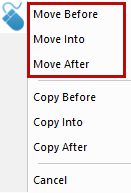
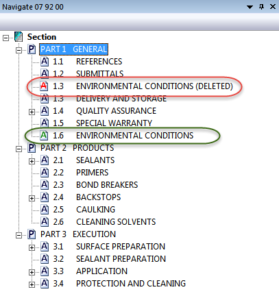

This command can be executed from the SI Editor's Navigator's Right-click menu.
The Move command provides greater flexibility and control for rearranging Subparts within the Section. When moving Subparts, the selected Subpart will be deleted from its current position and moved to the location where the mouse button is released.
 When rearranging Subparts, they will be tracked with Revisions if the project is configured to use them. When moved to another location, the selected Subpart will be deleted from its current position and added to the new location. For the deleted Subpart, the Navigator's icon transforms to red and '(DELETED)' is appended to the end of the Subpart's Title. In contrast, the moved Subpart's icon transforms to green. While editing within the Navigator, the SI Editor's Undo and Redo commands can be used.
When rearranging Subparts, they will be tracked with Revisions if the project is configured to use them. When moved to another location, the selected Subpart will be deleted from its current position and added to the new location. For the deleted Subpart, the Navigator's icon transforms to red and '(DELETED)' is appended to the end of the Subpart's Title. In contrast, the moved Subpart's icon transforms to green. While editing within the Navigator, the SI Editor's Undo and Redo commands can be used.
The Navigator offers two distinct drag-and-drop methods for moving Subparts within the Section:

 To learn more about the Navigator, refer to the Navigator Overview topic.
To learn more about the Navigator, refer to the Navigator Overview topic.
 In this example, 1.3 ENVIRONMENTAL CONDITIONS was moved to 1.6 ENVIRONMENTAL CONDITIONS. As you see, the icons transform accordingly to show the original Subpart was deleted and the moved Subpart was added.
In this example, 1.3 ENVIRONMENTAL CONDITIONS was moved to 1.6 ENVIRONMENTAL CONDITIONS. As you see, the icons transform accordingly to show the original Subpart was deleted and the moved Subpart was added.

 Watch The Navigator eLearning module within Chapter 3 - Editing.
Watch The Navigator eLearning module within Chapter 3 - Editing.
Users are encouraged to visit the SpecsIntact Website's Support & Help Center for access to all of our User Tools, including Web-Based Help (containing Troubleshooting, Frequently Asked Questions (FAQs), Technical Notes, and Known Problems), eLearning Modules (video tutorials), and printable Guides.
| CONTACT US: | ||
| 256.895.5505 | ||
| SpecsIntact@usace.army.mil | ||
| SpecsIntact.wbdg.org | ||